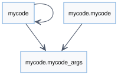
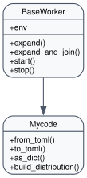
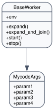
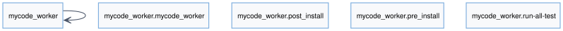
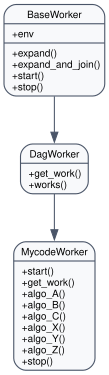

MyCode Project
Overview
Minimal starter template you can copy to bootstrap a new AGILab application.
Demonstrates the project layout expected by the platform (manager package, worker package,
app_argsdefinitions, Explore configuration) with minimal business logic so you can focus on custom code.Ships with blank Streamlit forms and prompt files to illustrate where to plug in UI customisation and Experiment prompts.
Manager (mycode.mycode)
Lightweight subclass of
BaseWorkerthat shows how to wire argument handling, logging and dataframe export without heavy dependencies.Provides the same
from_toml/to_tomlhelpers as production projects so you can reuse the Execute page snippets verbatim.
Args (mycode.app_args)
Simple Pydantic model that mirrors the keys present in
app_settings.toml.Ideal starting point for capturing new configuration options; extend the model and the Streamlit form generated on the Execute page will pick them up.
Worker (mycode_worker.mycode_worker)
Skeleton worker that demonstrates the lifecycle hooks (
start,work_init,run) required by the distributor.Includes placeholder logic for dataset loading and result persistence—replace with your domain-specific processing steps.
Assets & Tests
app_test.pyensures the installer and worker skeleton keep working as the template evolves.test/_test_*modules show how to unit-test managers and workers in isolation.app_args_form.pyprovides the optional Streamlit form that mirrors the generated UI; tailor it when you need additional validation or widgets.
API Reference
{kind=link}

Package your_code
mycode: module mycode Auteur: Jean-Pierre Morard Copyright: Thales SIX GTS France SAS
- class mycode.mycode.Mycode(env, args=None, **raw_args)[source]
Bases:
BaseWorkerClass MyCode provides methods to orchestrate the run
- args_dump_mode: ClassVar[str] = 'json'
- args_dumper(settings_path, *, section='args', create_missing=True)
- Return type:
None
- args_ensure_defaults(**_)
- Return type:
MycodeArgs
- args_helper_module: ClassVar[ModuleType | str | None] = None
- args_loader(*, section='args')
- Return type:
MycodeArgs
- args_merger(overrides=None)
- Return type:
MycodeArgs
- as_dict(mode=None)
Return serialisable worker arguments, allowing subclasses to extend the payload.
- Return type:
dict[str,Any]
- default_settings_path: ClassVar[str] = 'app_settings.toml'
- default_settings_section: ClassVar[str] = 'args'
- env: Optional[AgiEnv] = None
- static expand(path, base_directory=None)
Expand a given path to an absolute path. :param path: The path to expand. :type path: str :param base_directory: The base directory to use for expanding the path. Defaults to None. :type base_directory: str, optional
- Returns:
The expanded absolute path.
- Return type:
str
- Raises:
None –
Note
This method handles both Unix and Windows paths and expands ‘~’ notation to the user’s home directory.
- static expand_and_join(path1, path2)
Join two paths after expanding the first path.
- Parameters:
path1 (str) – The first path to expand and join.
path2 (str) – The second path to join with the expanded first path.
- Returns:
The joined path.
- Return type:
str
- classmethod from_toml(env, settings_path=None, section=None, **overrides)
Instantiate the worker with arguments read from a TOML settings file.
- Return type:
BaseWorker
- managed_pc_home_suffix: ClassVar[str] = 'MyApp'
- managed_pc_path_fields: ClassVar[tuple[str, ...]] = ('data_uri',)
- static normalize_data_uri(data_uri)
Normalize data URIs and ensure Windows shares are reachable.
- Return type:
str
- prepare_output_dir(root, *, subdir='dataframe', attribute='data_out', clean=True)
Create (and optionally reset) a deterministic output directory.
- Return type:
Path
- setup_args(args, *, env=None, error=None, output_field=None, output_subdir='dataframe', output_attr='data_out', output_clean=True, output_parents_up=0)
- Return type:
Any
- static start(worker_inst)
Invoke the concrete worker’s
starthook once initialised.
- stop()
Returns:
- to_toml(settings_path=None, section=None, create_missing=True)
Persist current arguments to a TOML settings file.
- Return type:
None
- verbose = 1
{kind=link}

{kind=link}

{kind=link}

Module mycode_worker extension of your_code
Auteur: yourself
- class mycode_worker.mycode_worker.MycodeWorker[source]
Bases:
DagWorkerclass derived from DagWorker
- args_dump_mode: ClassVar[str] = 'json'
- args_dumper: ClassVar[Callable[..., None] | None] = None
- args_ensure_defaults: ClassVar[Callable[..., Any] | None] = None
- args_helper_module: ClassVar[ModuleType | str | None] = None
- args_loader: ClassVar[Callable[..., Any] | None] = None
- args_merger: ClassVar[Callable[[Any, Optional[Any]], Any] | None] = None
- as_dict(mode=None)
Return serialisable worker arguments, allowing subclasses to extend the payload.
- Return type:
dict[str,Any]
- default_settings_path: ClassVar[str] = 'app_settings.toml'
- default_settings_section: ClassVar[str] = 'args'
- env: Optional[AgiEnv] = None
- static expand(path, base_directory=None)
Expand a given path to an absolute path. :param path: The path to expand. :type path: str :param base_directory: The base directory to use for expanding the path. Defaults to None. :type base_directory: str, optional
- Returns:
The expanded absolute path.
- Return type:
str
- Raises:
None –
Note
This method handles both Unix and Windows paths and expands ‘~’ notation to the user’s home directory.
- static expand_and_join(path1, path2)
Join two paths after expanding the first path.
- Parameters:
path1 (str) – The first path to expand and join.
path2 (str) – The second path to join with the expanded first path.
- Returns:
The joined path.
- Return type:
str
- classmethod from_toml(env, settings_path=None, section=None, **overrides)
Instantiate the worker with arguments read from a TOML settings file.
- Return type:
BaseWorker
- get_work(work, args, previous_result)[source]
- Parameters:
work (
str) – contain the worker function name called by BaseWorker.do_work
this is type string and not type function to avoid manager (e.g. Mycode) to be dependant of MyCodeWorker :return:
- managed_pc_home_suffix: ClassVar[str] = 'MyApp'
- managed_pc_path_fields: ClassVar[tuple[str, ...]] = ('data_uri',)
- static normalize_data_uri(data_uri)
Normalize data URIs and ensure Windows shares are reachable.
- Return type:
str
- prepare_output_dir(root, *, subdir='dataframe', attribute='data_out', clean=True)
Create (and optionally reset) a deterministic output directory.
- Return type:
Path
- setup_args(args, *, env=None, error=None, output_field=None, output_subdir='dataframe', output_attr='data_out', output_clean=True, output_parents_up=0)
- Return type:
Any
- start()[source]
Start the function.
This function prints the file name if the ‘verbose’ attribute is greater than 0.
- Parameters:
self – The current instance of the class.
- Returns:
None
- stop()[source]
Stop the current action.
- Raises:
NotImplementedError – This method needs to be implemented in a subclass.
- to_toml(settings_path=None, section=None, create_missing=True)
Persist current arguments to a TOML settings file.
- Return type:
None
- verbose = 1
- works(workers_plan, workers_plan_metadata)
Your existing entry point; keep as-is, just call multiprocess path for mode 4, etc.
{kind=link}
